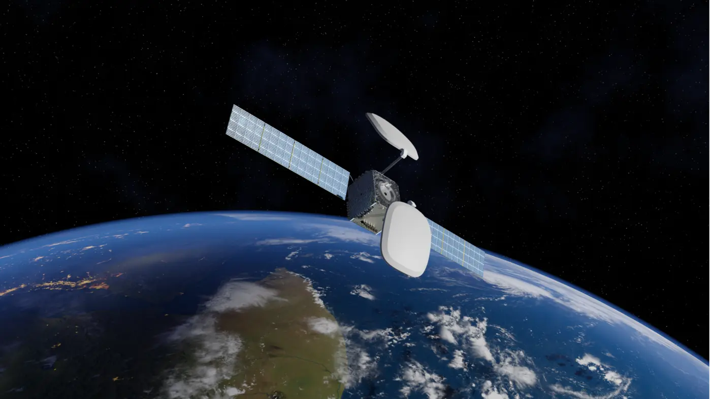
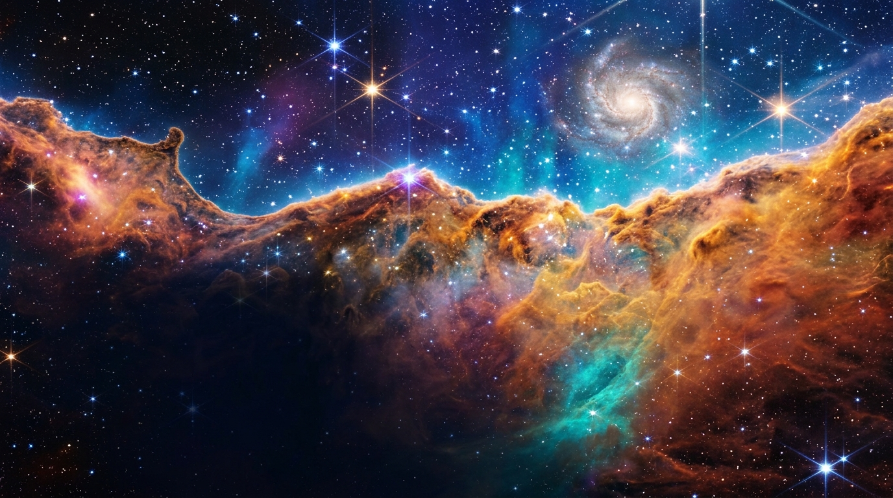
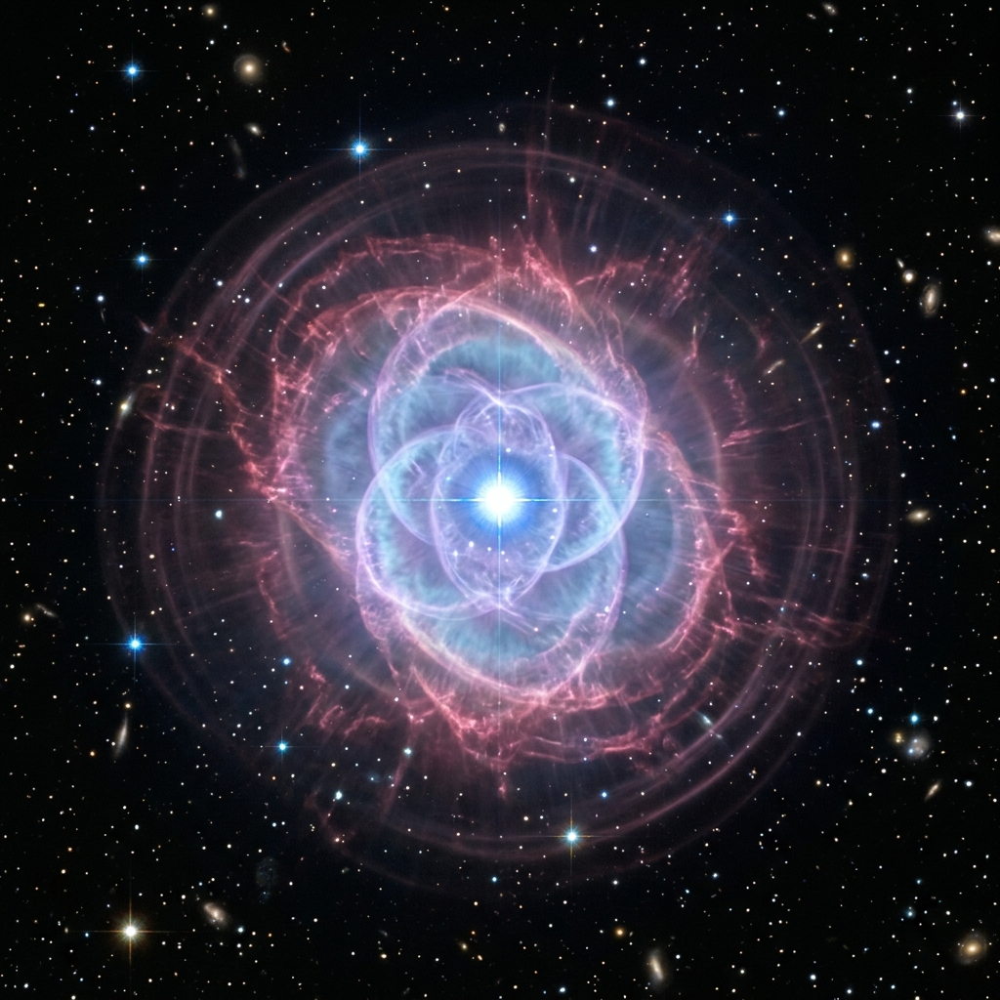

8.2know that: the universe is a large collection of billions of galaxies; a galaxy is a large collection of billions of stars; our solar system is in the Milky Way galaxy
8.3understand why gravitational field strength, g, varies and know that it is different on other planets and the Moon from that on the Earth
8.4explain that gravitational force: causes moons to orbit planets; causes the planets to orbit the Sun; causes artificial satellites to orbit the Earth; causes comets to orbit the Sun
8.5describe the differences in the orbits of comets, moons and planets
8.6use the relationship between orbital speed, orbital radius and time period: orbital speed = (2 × π × orbital radius) ÷ time period, v = 2πr ÷ T
8.7understand how stars can be classified according to their colour
8.8know that a star’s colour is related to its temperature
8.9describe the evolution of stars of similar mass to the Sun through the following stages: nebula; star (main sequence); red giant; white dwarf
8.10describe the evolution of stars with a mass larger than the Sun
The structure of the universe 8.2
A solar system is a star with the planets and moons that orbit it.
A galaxy is a large collection of billions of stars. Our solar system is in the Milky Way galaxy.
The universe is a large collection of billions of galaxies.
The gravitational force causes moons to orbit planets, planets to orbit the Sun, artificial satellites to orbit the Earth and comets to orbit the Sun. It depends on the masses of the two objects and the distance between them.
Planets and moons have almost circular orbits.
Comets have very elliptical (squashed circle) orbits: sometimes close to the Sun, most of the time very far away.
A comet is fastest near the Sun (gravity speeds it up as it falls in) and slowest furthest away (gravity slows it down as it moves out).
Artificial satellites can be put in different orbits: high orbits for communication, low orbits for monitoring the Earth.
Satellite orbits around the EarthPlanet and comet orbits
Closer bodies feel a bigger force, so they move faster. Use the same units for distance and time as the answer needs (m and s for m/s).
Practice
Mercury (time period · orbital radius): 87.97 days · 57.91 million km. Find its orbital speed. Answer4.14 million km/day = 47 900 m/s
Venus (time period · orbital radius): 323 568 min · 108.2 million km. Find its orbital speed. Answer2 100 km/min = 35 000 m/s
Earth (time period · orbital radius): 31 557 600 s · 149.6 million km. Find its orbital speed. Answer29.8 km/s = 29 800 m/s
Mars (time period · orbital radius): 59 356 800 s · 227.9 million km. Find its orbital speed. Answer24.1 km/s = 24 100 m/s
Jupiter (time period · orbital radius): 11.86 years · 778.5 million km. Find its orbital speed. Answer412 million km/year = 13 100 m/s
A rock on a string is swung round in a circle of radius 1.2 m. One turn takes 0.5 s. Find its orbital speed. Answer2 × π × 1.2 ÷ 0.5 = 15.1 m/s
The Moon orbits the Earth in 27 days. Its orbital radius is 362 600 km. Find its orbital speed. Answer2 × π × 362 600 ÷ 27 = 84 400 km/day (977 m/s)
A woman stands on the equator. The Earth's radius is 6371 km and it turns once in 24 hours. How fast is she moving? Answer2 × π × 6 371 000 ÷ 86 400 = 463 m/s
Geostationary satellites stay above the same point on the Earth, so they orbit once every 24 hours. One orbits 35 000 km above the surface; the Earth’s radius is 6400 km. What is its speed?
Answerr = 6400 + 35 000 = 41 400 km = 41 400 000 m; T = 24 × 3600 = 86 400 s; v = 2 × π × 41 400 000 ÷ 86 400 = 3010 m/s

A satellite above the Earth
How stars are born 8.9
A nebula is a cloud of hydrogen gas and dust.
Over millions of years it collapses because of gravitational attraction.
A protostar forms in the hot, dense middle, where the collapse has turned gravitational potential energy into thermal energy. When it is hot enough, hydrogen fusion starts: a star is born.
The universe is a large collection of billions of galaxies.
Our solar system is in the Andromeda galaxy.
Gravitational force makes the Moon orbit the Earth.
Comets have almost circular orbits.
A comet moves fastest when it is closest to the Sun.
Your mass is smaller on the Moon.
g is bigger on Jupiter than on Earth.
Red stars are the hottest.
The Sun will become a red giant and then a white dwarf.
Every star ends its life as a black hole.
Key terms
Nebula
cloud of gas (mainly hydrogen) and dust
Protostar
cloud collapsed by gravity, getting hot
Main sequence star
fusion of hydrogen; gravity balances pressure
Red (super)giant
huge, cool, red star
White dwarf
tiny, very hot, white star
Supernova
a massive star explodes
Neutron star
tiny, incredibly dense star
Black hole
so dense that not even light can escape
Check yourself
NASA / ESA / Hubble (Ring Nebula M57, Crab Nebula, Apollo 17 Blue Marble, SDO Sun — Public Domain) · Event Horizon Telescope Collaboration (M87*, CC BY 4.0) · Artwork shared by @thirdeyekingdom.
Which list is in order of size, smallest first?
Galaxy, solar system, universe
Solar system, galaxy, universe
Universe, galaxy, solar system
Solar system, universe, galaxy
Which galaxy is our solar system in?
Andromeda
The Milky Way
The Local Group
Virgo
What keeps a satellite in orbit around the Earth?
Magnetism
Gravitational force
Air resistance
Its engines
What shape is a comet’s orbit?
Almost circular
Very elliptical
A straight line
A spiral
Why is your weight smaller on the Moon than on the Earth?
Your mass is smaller
The Moon has a smaller gravitational field strength
There is no air on the Moon
The Moon is further from the Sun
A planet’s orbital radius is r and its time period is T. What is its orbital speed?
2πr × T
2πr ÷ T
T ÷ 2πr
πr² ÷ T
Which colour of star is the hottest?
Red
Orange
Yellow
Blue
What does a star like the Sun become after the red giant stage?
A black hole
A neutron star
A white dwarf
A supernova
What can be left after a supernova?
A white dwarf
A red giant
A neutron star or a black hole
A nebula only
Describe the differences between the orbit of a planet and the orbit of a comet.
A planet’s orbit is almost circular; a comet’s orbit is very elliptical
A comet’s speed changes a lot (fastest near the Sun) / its distance from the Sun changes a lot
An astronaut has a mass of 100 kg. Explain why her weight on the Moon is different from her weight on the Earth.
Weight = mass × gravitational field strength (W = mg)
Her mass stays the same (100 kg)
The Moon has a smaller gravitational field strength because it has less mass, so her weight is smaller
A geostationary satellite orbits 35 000 km above the Earth’s surface. The Earth’s radius is 6400 km. Calculate its orbital speed in m/s.
r = 41 400 km = 41 400 000 m
T = 24 h = 86 400 s
v = 2πr ÷ T = 3010 m/s
Describe the life cycle of a star of similar mass to the Sun.
A nebula (cloud of gas and dust) collapses under gravity
It becomes a main sequence star (hydrogen fusion; gravity balanced by pressure)
When the hydrogen runs out it expands into a red giant
It throws off its outer layers and becomes a white dwarf
Describe the evolution of a star with a mass much larger than the Sun.
Massive main sequence star (uses up its hydrogen faster)
Expands into a red supergiant
Explodes as a supernova
Leaves a neutron star or (if massive enough) a black hole

IGCSE Physics · Topic 8
Astrophysics
Before we start
Your turn: in pairs, answer the questions on one of these cards.
Main sequence starfusion of hydrogen; gravity balances pressure
Red (super)gianthuge, cool, red star
Key terms (2 of 2)

White dwarftiny, very hot, white star
Supernovaa massive star explodes
Neutron startiny, incredibly dense star
Black holeso dense that not even light can escape
Your turn: put them in order
A star like the Sun. Number the stages 1–4, then click to check.
3Red giant
1Nebula
4White dwarf
2Main sequence star
Your turn: put them in order
A star much more massive than the Sun. Number the stages 1–5, then click to check.
4Supernova
1Nebula
5Neutron star or black hole
3Red supergiant
2Massive main sequence star
Your turn: fill the gaps
The gas and dust in a nebula is pulled together by gravity. It heats up and becomes a protostar. When it is hot enough, fusion starts. Gravity is balanced by pressure: it is now a main sequence star.
True or false?
The universe is a large collection of billions of galaxies.
Our solar system is in the Andromeda galaxy.
Gravitational force makes the Moon orbit the Earth.
Comets have almost circular orbits.
A comet moves fastest when it is closest to the Sun.
Your mass is smaller on the Moon.
g is bigger on Jupiter than on Earth.
Red stars are the hottest.
The Sun will become a red giant and then a white dwarf.

 VideoThe scale of all thingsnerdist.com ↗
VideoThe scale of all thingsnerdist.com ↗


 InteractiveAsteroid launcher: what if one hit your town?neal.fun ↗
InteractiveAsteroid launcher: what if one hit your town?neal.fun ↗


 VideoNASA: the biggest black holes in the universeyoutube.com ↗
VideoNASA: the biggest black holes in the universeyoutube.com ↗